30 Hydrocarbons
Arenes: structure, electrophilic substitution, side-chain reactions and synthesis
30 Hydrocarbons
本章对应 CIE 9701 2025–2027 syllabus 的 30.1 Arenes。题目部分对应专题题包 7.2 Hydrocarbons (A Level Only)；当前资源包含 Easy 与 Hard 两组 Structured Questions。
Learning objectives
学完本章后，你应该能够：
- explain the structure and stability of benzene using \(sp^2\) hybridisation, \(\sigma\) bonds and a delocalised \(\pi\) system;
- describe electrophilic substitution in benzene and write equations for the formation of common electrophiles;
- explain nitration, halogenation and Friedel–Crafts alkylation/acylation;
- predict the effect of an alkyl group on the orientation of further substitution;
- distinguish reactions of the benzene ring from reactions at the side-chain of methylbenzene;
- describe oxidation of alkylbenzenes, hydrogenation of benzene and the preparation of aryl halides;
- use these reactions to propose short synthetic routes.
30.1 Arenes
Benzene: structure and aromatic stability
An arene is an aromatic hydrocarbon containing one or more benzene rings. Benzene is planar and each carbon atom is \(sp^2\) hybridised. The three \(sp^2\) orbitals on each carbon form \(\sigma\) bonds in a trigonal-planar arrangement, so the bond angles are approximately \(120^\circ\).
The remaining unhybridised p orbital on every carbon is perpendicular to the ring. Sideways overlap of these six p orbitals produces one continuous delocalised \(\pi\) system above and below the plane of the ring. The six \(\pi\) electrons are spread over the whole ring rather than being confined to three separate C=C bonds. All six C–C bonds consequently have the same intermediate bond order and length.
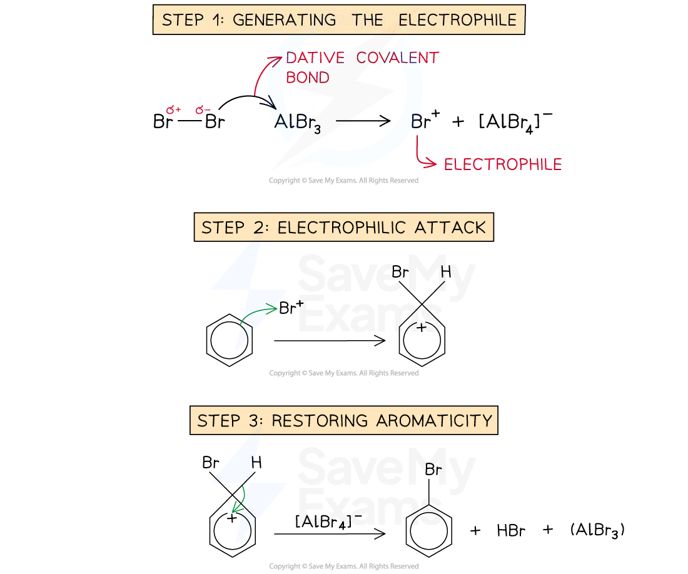
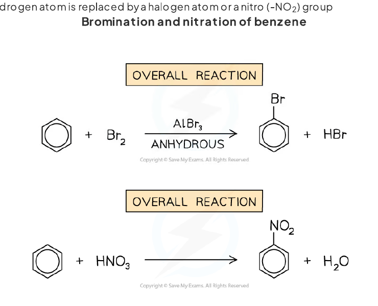
Worked example · Benzene bonding
Bond angle, hybridisation and bond length
State the bond angle in benzene, state the hybridisation of its carbon atoms, and explain why all the C–C bonds have the same length.
- The bond angle is \(120^\circ\).
- Each carbon atom is \(sp^2\) hybridised.
- The unhybridised p orbitals overlap sideways around the ring to form a delocalised $ heta$ system. The bonding is therefore spread evenly around the ring, giving all six C–C bonds the same intermediate bond order and length.
Electrophilic substitution
Benzene is electron-rich because of its delocalised $ heta$ electrons. In an electrophilic substitution:
- an electrophile is generated;
- the benzene $ heta$ system attacks the electrophile and a positively charged arenium ion forms;
- a proton is removed from the carbon bearing the new substituent;
- the delocalised aromatic system is restored.
The reaction is called substitution because a hydrogen atom on the ring is replaced. Electrophilic addition would leave the ring without its aromatic stabilisation, so it is less favourable under these conditions.
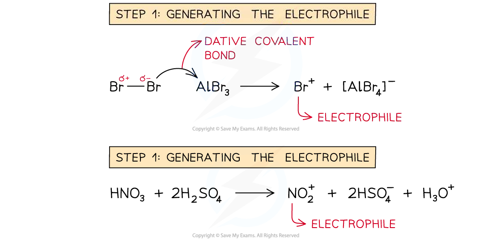
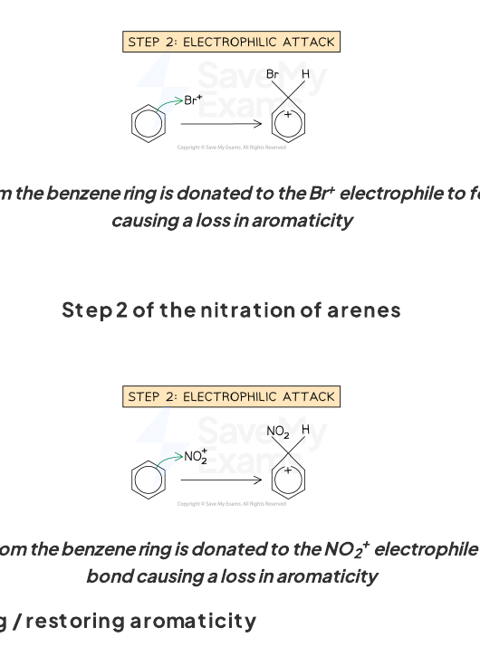
Worked example · Nitration of benzene
Formation of the nitronium ion
Concentrated nitric acid is mixed with concentrated sulfuric acid before benzene is added. Write an equation for the formation of the electrophile and explain the role of nitric acid.
The electrophile is the nitronium ion, \(\ce{NO2+}\):
\[\ce{2H2SO4 + HNO3 -> 2HSO4- + H3O+ + NO2+}\]
Nitric acid acts as a Brønsted–Lowry base because it accepts a proton from sulfuric acid. The resulting \(\ce{NO2+}\) ion attacks the electron-rich benzene ring.
Halogenation of benzene
Benzene reacts with chlorine or bromine in the presence of a halogen carrier such as \(\ce{AlCl3}\) or \(\ce{AlBr3}\). The carrier polarises the halogen molecule and helps generate a strong electrophile:
\[\ce{AlBr3 + Br2 -> AlBr4- + Br+}\]
The ring attacks \(\ce{Br+}\), an arenium ion forms, and loss of \(\ce{H+}\) restores the aromatic ring. The product is bromobenzene. The same overall pattern applies to chlorination, using \(\ce{Cl2}\) and \(\ce{AlCl3}\).
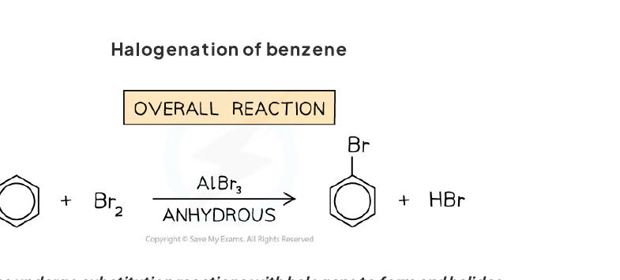
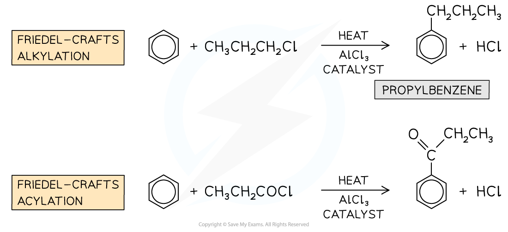
Worked example · Bromination mechanism
Curly arrows in bromination
Benzene reacts with bromine in the presence of aluminium bromide. Write the equation for formation of the electrophile and describe the two curly arrows needed in the substitution mechanism.
The electrophile-generation equation is:
\[\ce{AlBr3 + Br2 -> AlBr4- + Br+}\]
The first curly arrow starts from the benzene \(\pi\)-electron ring and points to \(\ce{Br+}\), forming a C–Br bond and a positively charged arenium intermediate. The second curly arrow starts at the C–H bond on the carbon bearing bromine and points back into the ring. This removes \(\ce{H+}\) and restores the delocalised aromatic system.
Nitration of benzene and methylbenzene
Benzene is warmed with a mixture of concentrated nitric acid and concentrated sulfuric acid. The product is nitrobenzene:
\[\ce{C6H6 + HNO3 -> C6H5NO2 + H2O}\]
Methylbenzene is more reactive than benzene because the methyl group releases electron density towards the ring. Nitration therefore gives mainly the 2- and 4-nitro isomers. Alkyl groups are called 2,4-directing or ortho/para-directing groups because they increase electron density at those positions relative to the 3-position.
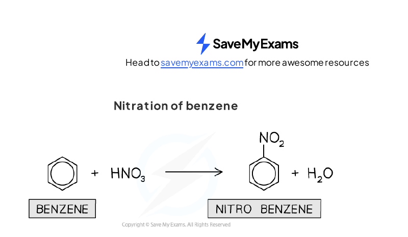
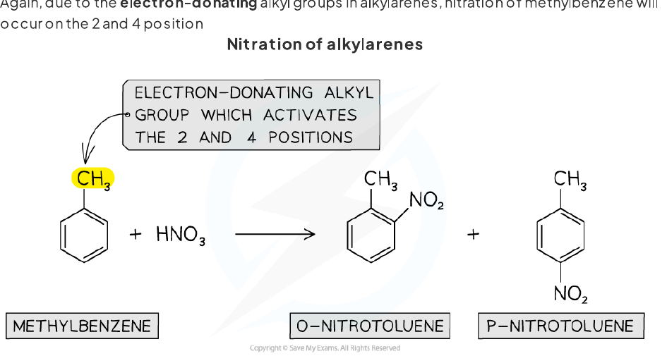
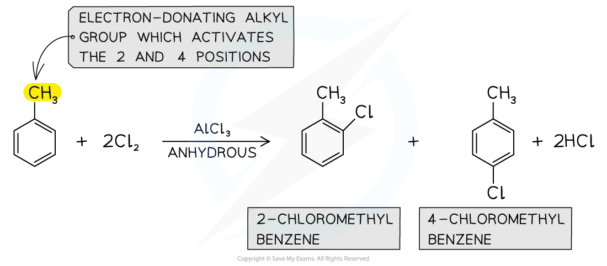
Worked example · Substitution of methylbenzene
Ring substitution and directing effects
Methylbenzene reacts with chlorine in the presence of aluminium chloride. State the two major ring-substitution products and explain why these positions are favoured.
The major products are 2-chloromethylbenzene and 4-chloromethylbenzene. The methyl group releases electron density towards the ring, making the 2- and 4-positions more electron-rich and more favourable for attack by the electrophile. The 3-isomer is formed in much smaller amount.
Friedel–Crafts alkylation and acylation
In a Friedel–Crafts alkylation, an alkyl halide reacts with a halogen carrier to generate an alkyl electrophile. For example:
\[\ce{CH3CH2Br + AlBr3 -> CH3CH2+ + AlBr4-}\]
The alkyl electrophile substitutes for a hydrogen atom on benzene, producing an alkylbenzene. In a Friedel–Crafts acylation, an acyl chloride reacts with anhydrous \(\ce{AlCl3}\) to form an acylium ion, \(\ce{RCO+}\). The product is an aromatic ketone.
The catalyst is a Lewis acid: it accepts an electron pair from the halogen atom and helps the C–X bond break heterolytically.
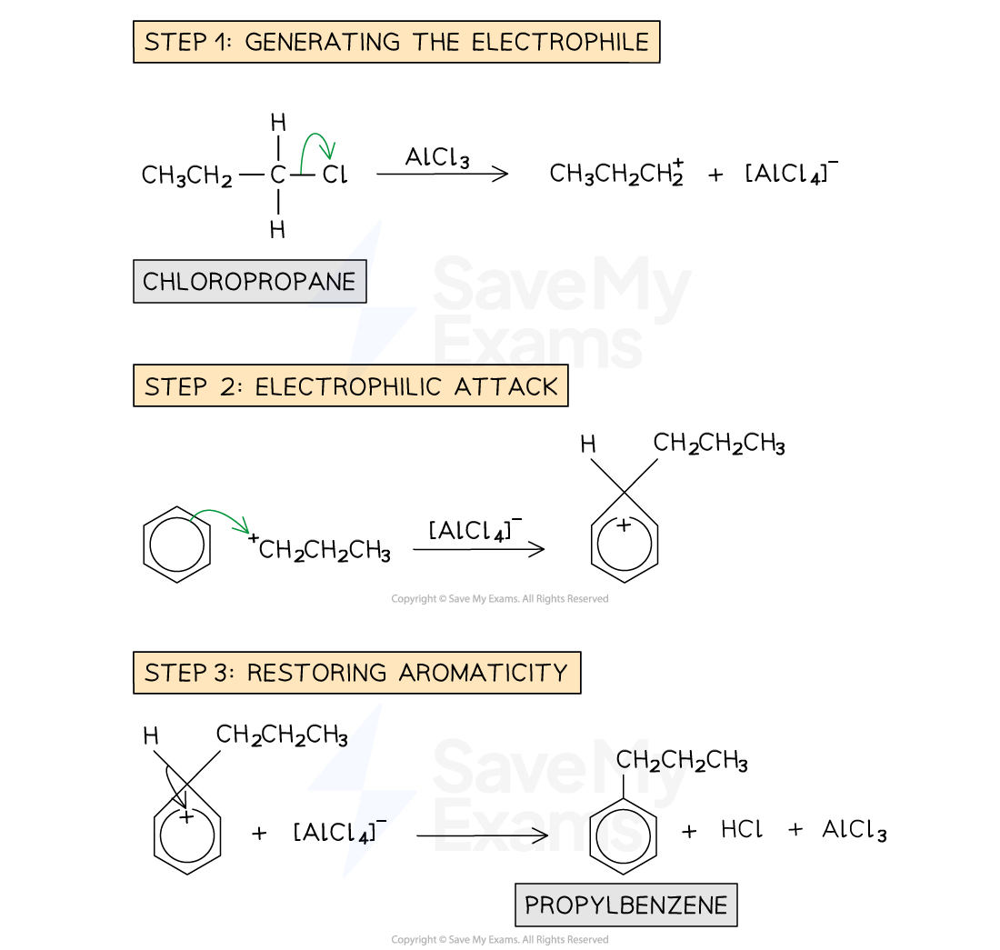
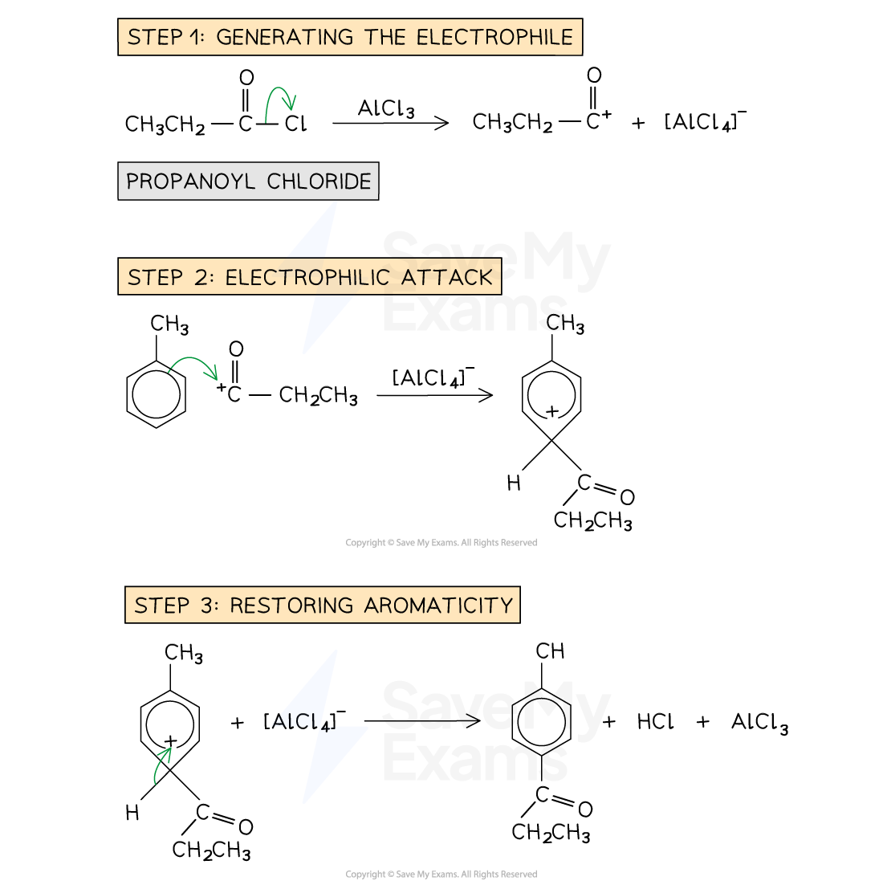
Worked example · Friedel–Crafts acylation
Formation of a ketone
Benzene reacts with propanoyl chloride in the presence of anhydrous aluminium chloride. Identify the electrophile, write its formation equation, and state the reaction type.
The acyl chloride is \(\ce{CH3CH2COCl}\) and the electrophile is the propanoyl cation, \(\ce{CH3CH2CO+}\):
\[\ce{CH3CH2COCl + AlCl3 -> CH3CH2CO+ + AlCl4-}\]
The benzene ring undergoes electrophilic substitution. The product is the aromatic ketone \(\ce{C6H5COCH2CH3}\) (propiophenone / 1-phenylpropan-1-one), and aromaticity is restored when \(\ce{H+}\) is removed.
Reactions of the side-chain of methylbenzene
The conditions determine whether the ring or the side-chain reacts.
| Conditions | Main transformation |
|---|---|
| \(\ce{Cl2}\) or \(\ce{Br2}\) with a halogen carrier | electrophilic substitution on the ring |
| \(\ce{Cl2}\) or \(\ce{Br2}\) with UV light | free-radical substitution at the side-chain |
| hot alkaline \(\ce{KMnO4}\) under reflux, then acidification | oxidation of an alkyl side-chain to \(\ce{-COOH}\) |
| \(\ce{H2}\), Ni/Pt catalyst, heat | hydrogenation of the aromatic ring |
For oxidation, any alkyl side-chain with at least one benzylic hydrogen is oxidised fully to a carboxylic acid. Methylbenzene therefore gives benzoic acid:
\[\ce{C6H5CH3 ->[hot\ KMnO4][H+,\ reflux] C6H5COOH}\]
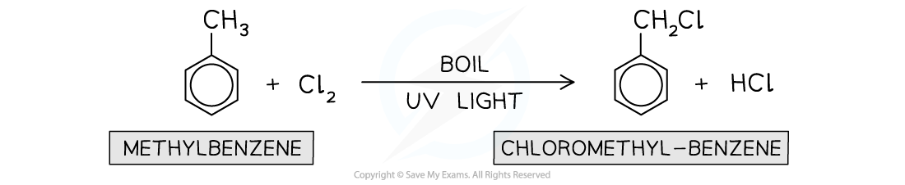
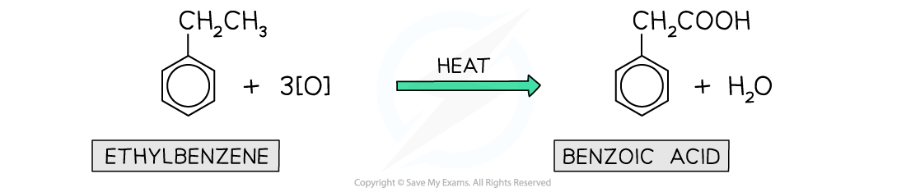
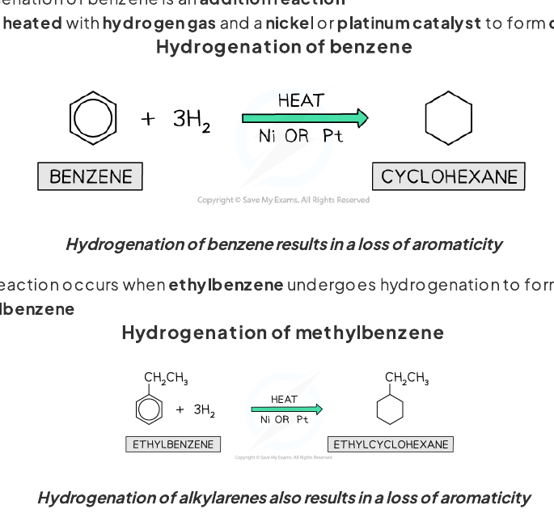
Worked example · Side-chain reactions
Bromination, hydrogenation and oxidation
Methylbenzene is treated separately with (i) bromine and UV light, (ii) hydrogen with a nickel catalyst and heat, and (iii) hot alkaline potassium manganate(VII) under reflux followed by acidification. State the organic product in each case.
- UV light causes free-radical substitution at the benzylic carbon. The product is benzyl bromide / bromomethylbenzene, \(\ce{C6H5CH2Br}\).
- Hydrogenation reduces the ring to give methylcyclohexane.
- Oxidation of the side-chain gives benzoic acid, \(\ce{C6H5COOH}\). The reaction mixture is acidified after reflux.
Further halogenation and aryl halides
Under UV light, the benzylic hydrogen atoms are substituted first because the benzyl radical is resonance-stabilised. With excess halogen, further side-chain substitution can occur, giving compounds such as \(\ce{C6H5CHCl2}\) and \(\ce{C6H5CCl3}\).
An aryl halide contains a halogen directly bonded to an aromatic ring. The C–X bond is stronger than a typical halogenoalkane C–X bond because the halogen lone pair can overlap with the ring \(\pi\) system. This partial delocalisation gives the C–X bond some double-bond character and makes aryl halides resistant to nucleophilic substitution.
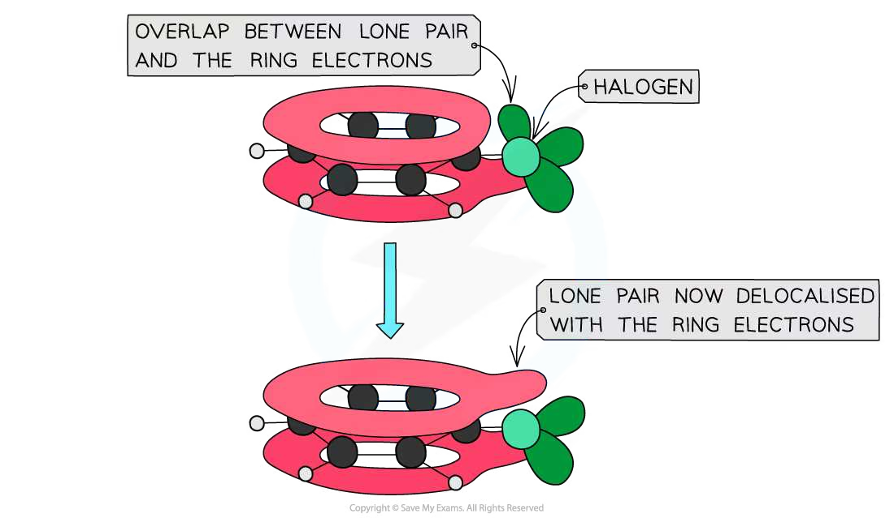
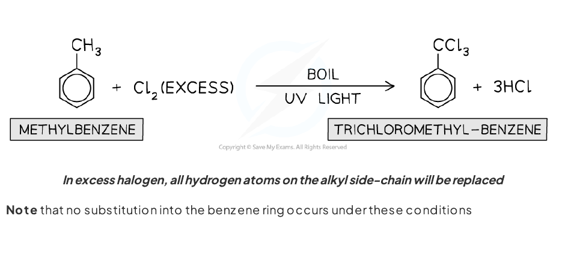
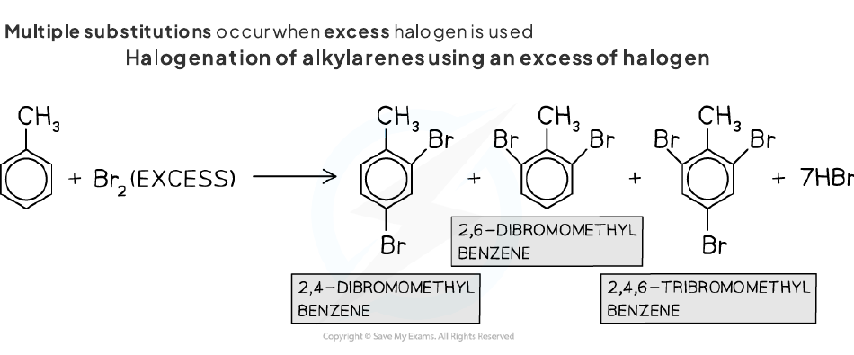
Worked example · Aryl halides
Comparing chlorobenzene and chloromethane
Explain why chlorobenzene is less reactive than chloromethane towards aqueous hydroxide ions.
In chlorobenzene, a lone pair on chlorine overlaps with the delocalised \(\pi\) system of the benzene ring. The C–Cl bond therefore has partial double-bond character and is shorter and stronger. The carbon is also \(sp^2\) hybridised. In chloromethane the C–Cl bond is a normal single bond, so it breaks more readily in nucleophilic substitution.
Synthesis and reaction planning
Useful synthetic sequences include:
- methylbenzene \(\rightarrow\) benzoic acid by hot alkaline manganate(VII), reflux and acidification;
- benzoic acid \(\rightarrow\) 3-nitrobenzoic acid by nitration, because the \(\ce{-COOH}\) group is meta-directing;
- a nitro group \(\rightarrow\) an amino group using tin and concentrated hydrochloric acid on heating;
- an alkylbenzene \(\rightarrow\) a ring-substituted product by electrophilic substitution;
- benzene \(\rightarrow\) an aromatic ketone by Friedel–Crafts acylation.
When planning a route, identify which functional group controls orientation and choose conditions that react at the ring or side-chain selectively.
Worked example · Three-step synthesis
Methylbenzene to 3-aminobenzoic acid
Methylbenzene is converted into 3-aminobenzoic acid in three steps. Identify the intermediate products and state suitable reagents and conditions for each step.
- Step 1: oxidise the methyl side-chain using hot alkaline \(\ce{KMnO4}\) under reflux, then acidify. The intermediate M is benzoic acid.
- Step 2: nitrate M using concentrated nitric acid and concentrated sulfuric acid, warming if necessary. The carboxylic acid group is meta-directing, so N is 3-nitrobenzoic acid.
- Step 3: reduce the nitro group using tin and concentrated hydrochloric acid on heating. This gives 3-aminobenzoic acid.
Chapter checklist
Structured questions
7.2 Hydrocarbons (A Level Only) - Structured Questions
本页保留题包中的全部 Structured Questions，按 Easy、Hard 分组。当前题包没有 Medium PDF，因此不虚构 Medium 题目。题目保留完整英文题干、所有分问、原始分值和题目中的局部图；答案保留完整解题步骤。
7.2 Hydrocarbons (A Level Only) - Easy
Example 1 · Benzene and methylbenzene substitution · 7.2 SQ Easy Q1
Benzene and methylbenzene undergo electrophilic substitution reactions.
(a) Benzene reacts with concentrated nitric acid in the presence of concentrated sulfuric acid.
- Write an equation for the reaction of benzene with nitric acid.
[1 mark] - State the type of reaction.
[1 mark]
(b) Methylbenzene reacts with chlorine in the presence of aluminium chloride.
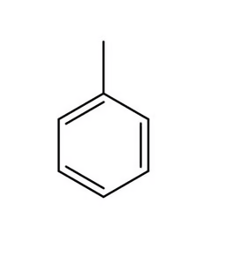
- Draw the two major organic products.
[2 marks] - State the type of mechanism involved.
[1 mark]
Show mark scheme / model answer
(a)(1)
\[\ce{C6H6 + HNO3 -> C6H5NO2 + H2O}\]
[1](a)(2) Electrophilic substitution.
[1](b)(1) The two products are 2-chloromethylbenzene and 4-chloromethylbenzene.
[2](b)(2) Electrophilic substitution. The methyl group is 2,4-directing.
[1]
Example 2 · Bromination of benzene · 7.2 SQ Easy Q2
Benzene reacts with bromine in the presence of a halogen carrier.
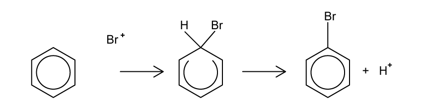
(a) State the name of the mechanism. [1 mark]
(b) Write an equation showing how the electrophile is formed when aluminium bromide is used. [1 mark]
(c) Fig. 2.1 shows part of the mechanism for the reaction of benzene with bromine. Complete the mechanism by adding the curly arrows and charges. [3 marks]
Show mark scheme / model answer
(a) Electrophilic substitution.
[1](b)
\[\ce{AlBr3 + Br2 -> AlBr4- + Br+}\]
[1](c) The benzene \(\pi\) electrons attack \(\ce{Br+}\), forming a C–Br bond and a positively charged arenium intermediate. The C–H bond then donates its electrons back into the ring, removing \(\ce{H+}\) and restoring the delocalised aromatic system. The curly arrows and charge must be placed correctly.
[3]
Example 3 · Reactions of methylbenzene · 7.2 SQ Easy Q3
Methylbenzene reacts under three different sets of conditions.
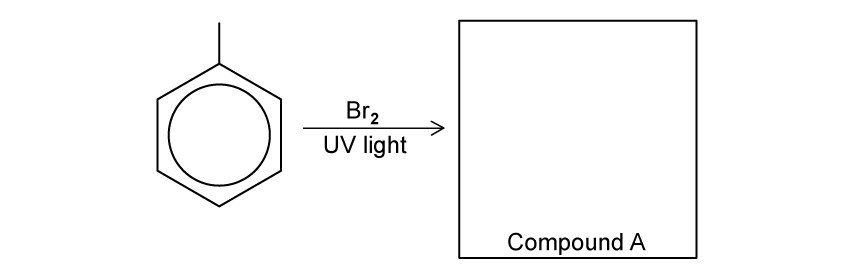
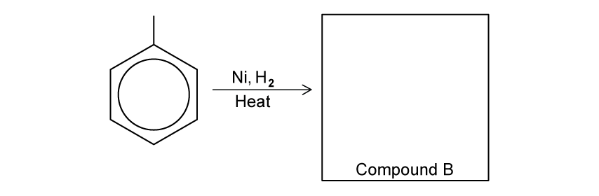
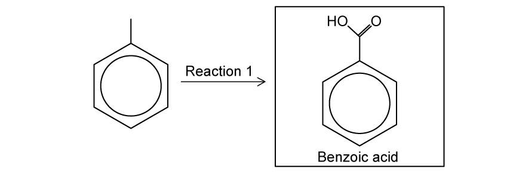
(a) Methylbenzene is reacted with bromine in the presence of ultraviolet light to form compound A. Identify A and give its structural formula. [2 marks]
(b) Methylbenzene is reacted with hydrogen in the presence of a nickel catalyst and heat to form compound B. Identify B. [1 mark]
(c) Methylbenzene is oxidised to benzoic acid. State suitable reagents and conditions. [2 marks]
Show mark scheme / model answer
- (a) A is benzyl bromide / bromomethylbenzene, \(\ce{C6H5CH2Br}\). UV light causes free-radical substitution at the benzylic side-chain carbon.
[2] - (b) B is methylcyclohexane.
[1] - (c) Use hot alkaline potassium manganate(VII), \(\ce{KMnO4}\) / \(\ce{MnO4-}\), under reflux. Acidify the product with dilute sulfuric acid to obtain benzoic acid.
[2]
7.2 Hydrocarbons (A Level Only) - Hard
Example 4 · Nitration and Friedel–Crafts acylation · 7.2 SQ Hard Q1
This question is about electrophilic substitution reactions of benzene.
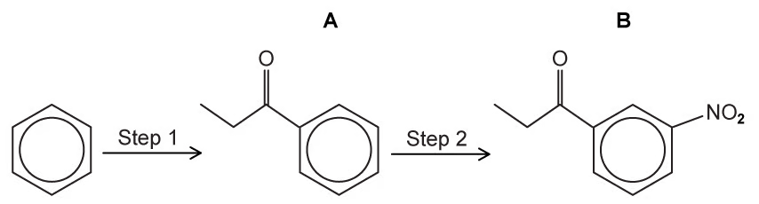
(a) Concentrated sulfuric acid and concentrated nitric acid are mixed to generate the electrophile for nitration.
- Write an equation for the formation of the electrophile.
[1 mark] - Explain why nitric acid acts as a Brønsted–Lowry base in this reaction.
[1 mark] - State the conjugate acids formed.
[1 mark]
(b) Benzene is converted into compound A and then compound B by Friedel–Crafts acylation.
- State the reagent used in step 1.
[1 mark] - Name the acyl chloride required to form compound A.
[1 mark] - Give the formula of the electrophile formed from the acyl chloride.
[1 mark] - Describe the mechanism for the conversion of benzene into compound A, including the role of the counter-ion.
[3 marks]
(c) Draw a dot-and-cross diagram for the aluminium chloride catalyst, showing the bonding and lone pairs on chlorine. [2 marks]
(d) Explain why electrophilic substitution is favoured over electrophilic addition in benzene. [2 marks]
Show mark scheme / model answer
(a)(1)
\[\ce{2H2SO4 + HNO3 -> 2HSO4- + H3O+ + NO2+}\]
[1](a)(2) \(\ce{HNO3}\) accepts a proton from \(\ce{H2SO4}\), so it is a Brønsted–Lowry base.
[1](a)(3) The conjugate acids are \(\ce{H3O+}\) and \(\ce{NO2+}\).
[1](b)(1) Anhydrous \(\ce{AlCl3}\).
[1](b)(2) Propanoyl chloride, \(\ce{CH3CH2COCl}\).
[1](b)(3) \(\ce{CH3CH2CO+}\), the propanoyl cation / acylium ion.
[1](b)(4) The acyl chloride coordinates to \(\ce{AlCl3}\) and forms \(\ce{CH3CH2CO+}\) and \(\ce{AlCl4-}\). Benzene \(\pi\) electrons attack the acyl cation to form a positively charged arenium intermediate. A C–H bond then donates electrons back into the ring, restoring aromaticity. The \(\ce{AlCl4-}\) counter-ion accepts the proton and participates in catalyst regeneration.
[3](c) The diagram should show an electron pair donated from chlorine to electron-deficient aluminium, with the chlorine lone pairs drawn correctly.
[2](d) Addition would destroy the delocalised aromatic stabilisation by converting ring \(\pi\) bonding into localised bonds. Substitution replaces a hydrogen atom; loss of \(\ce{H+}\) restores the aromatic system.
[2]
Example 5 · Friedel–Crafts acylation followed by reduction · 7.2 SQ Hard Q2
Benzene is converted into an aromatic ketone by Friedel–Crafts acylation. The ketone is then reduced to an alcohol.
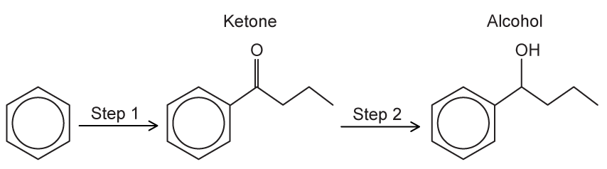
(a) Describe the mechanism for the formation of the catalyst complex from the acyl chloride and aluminium chloride. [2 marks]
(b) Describe the mechanism for formation of the ketone, including regeneration of the catalyst. [5 marks]
(c) State the reagents and conditions for step 2, the reduction of the ketone to the alcohol. [2 marks]
Show mark scheme / model answer
(a) A curly arrow from the C–Cl bond points to chlorine. A lone pair on chlorine then forms a coordinate bond to electron-deficient aluminium, giving the catalyst complex.
[2](b) The electrophile is generated as:
\[\ce{CH3CH2CH2COCl + AlCl3 -> CH3CH2CH2CO+ + AlCl4-}\]
Benzene \(\pi\) electrons attack the acylium ion, forming an arenium intermediate. Electrons from the C–H bond return to the ring to restore aromaticity. The \(\ce{Al-Cl}\) bond then breaks to chlorine, and the chloride ion removes the proton from the intermediate. This forms the ketone and regenerates \(\ce{AlCl3}\); \(\ce{HCl}\) is also produced.
[5](c) Use sodium tetrahydridoborate(III), \(\ce{NaBH4}\), in ethanol, \(\ce{CH3CH2OH}\); warm if required.
[2]
Example 6 · Hydrogenation, sulfonation and synthesis · 7.2 SQ Hard Q3
This question is about further reactions of benzene and methylbenzene.
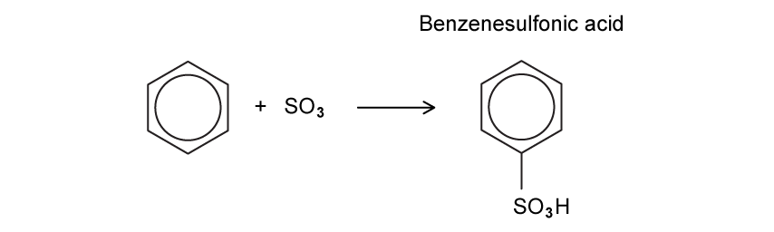
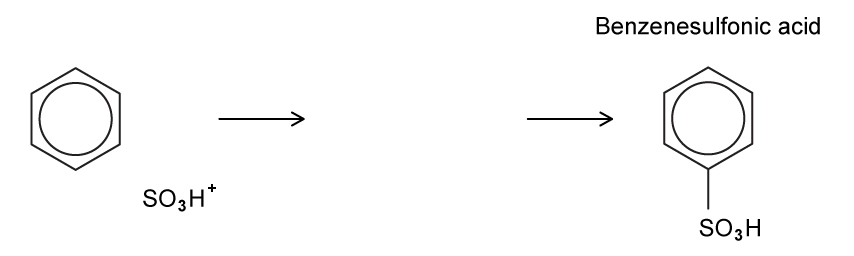
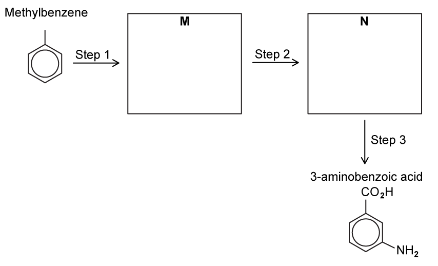
(a) Benzene is converted into cyclohexane.
- State the type of reaction.
[1 mark] - State the reagent and conditions.
[2 marks] - State the bond angle in benzene and in cyclohexane.
[2 marks] - Explain the change in bonding and geometry.
[2 marks]
(b) Benzene reacts with sulfur trioxide in sulfuric acid to form benzenesulfonic acid.
- Use the equation shown to identify the electrophile.
[1 mark] - Describe the electrophilic substitution mechanism.
[3 marks] - Write an equation showing regeneration of the sulfuric acid catalyst.
[1 mark]
(c) Methylbenzene is converted into 3-aminobenzoic acid in three steps. The original question labels the intermediate compounds M and N.
- Identify M and N.
[2 marks] - State reagents and conditions for steps 1, 2 and 3.
[3 marks]
[Total: 2 marks]
Show mark scheme / model answer
(a)(1) Reduction / hydrogenation.
[1](a)(2) Hydrogen gas with a nickel or platinum catalyst, on heating.
[2](a)(3) Benzene: \(120^\circ\). Cyclohexane: \(109.5^\circ\).
[2](a)(4) The ring \(\pi\) bonds are converted into C–H \(\sigma\) bonds. Benzene carbon atoms are \(sp^2\) hybridised and trigonal planar; cyclohexane carbon atoms have tetrahedral geometry.
[2](b)(1) From
\[\ce{SO3 + H2SO4 -> SO3H+ + HSO4-}\]
the electrophile is \(\ce{SO3H+}\).
[1](b)(2) Benzene \(\pi\) electrons attack the sulfur atom of \(\ce{SO3H+}\), forming a positively charged arenium intermediate. The C–H bond electrons then return to the ring, restoring aromaticity and forming \(\ce{H+}\).
[3](b)(3)
\[\ce{HSO4- + H+ -> H2SO4}\]
[1](c)(1) M = benzoic acid; N = 3-nitrobenzoic acid.
[2](c)(2) Step 1: hot alkaline \(\ce{KMnO4}\) / \(\ce{MnO4-}\) under reflux, then acidify. Step 2: concentrated \(\ce{HNO3}\) and concentrated \(\ce{H2SO4}\). Step 3: tin, concentrated hydrochloric acid and heat.
[3]
The PDF prints [Total: 2 marks]; that original text is retained above even though the listed reagent sequence contains more than two answer points.